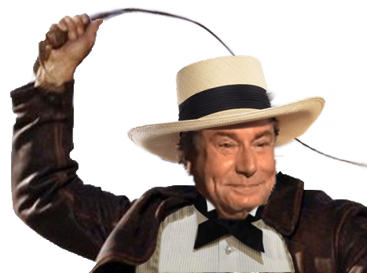

ISSOU
Quelle est le but de ce site ?
Le but de ce site est de mettre en avant les entreprise qui traite le plus leur employés comme des esclave.
Avec ce site vous pouvez donc noter sincérement comment vous traite ou vous traitait votre ancien maitre.
0
|10
Voila, maintenant vous pourrez afin vous faire faire attendre et dénoncer vos condition d'esclavage.